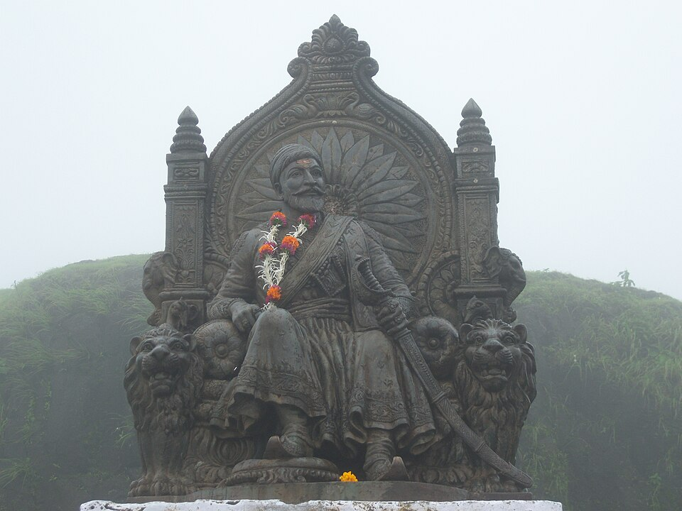

Maharashtra's history spans over two millennia. The Satavahana dynasty (230 BCE–225 CE) established Paithan as their capital and patronized Buddhism, creating rock-cut caves at Karla and Bhaja. The Vakatakas followed, commissioning the later caves at Ajanta. The Rashtrakutas and Chalukyas carved Ellora's masterpieces, while the Yadavas of Devagiri oversaw the golden age of Marathi language.
The 17th century witnessed the rise of the Maratha Empire under Chhatrapati Shivaji Maharaj, who established Hindavi Swarajya using guerrilla warfare from the Sahyadri forts. The Peshwas later expanded Maratha influence "from Attock to Cuttack." After British annexation in 1818, Maharashtra became the epicenter of social reform — led by Mahatma Phule, Savitribai Phule, and Dr. B.R. Ambedkar — and the freedom struggle.

Historical Eras
Satavahana → Vakataka → Chalukya → Rashtrakuta → Yadava → Bahmani Sultanate → Maratha Empire → Peshwa → British → Modern State (1960)
Key Figures
Chhatrapati Shivaji Maharaj, Peshwa Bajirao I, Lokmanya Tilak, Mahatma Phule, Savitribai Phule, Dr. B.R. Ambedkar, Sant Dnyaneshwar, Sant Tukaram
Legacy
Over 300 hill forts, the Bhakti movement's egalitarian philosophy, India's social reform epicenter, five UNESCO World Heritage Sites, and the Samyukta Maharashtra movement (1960)